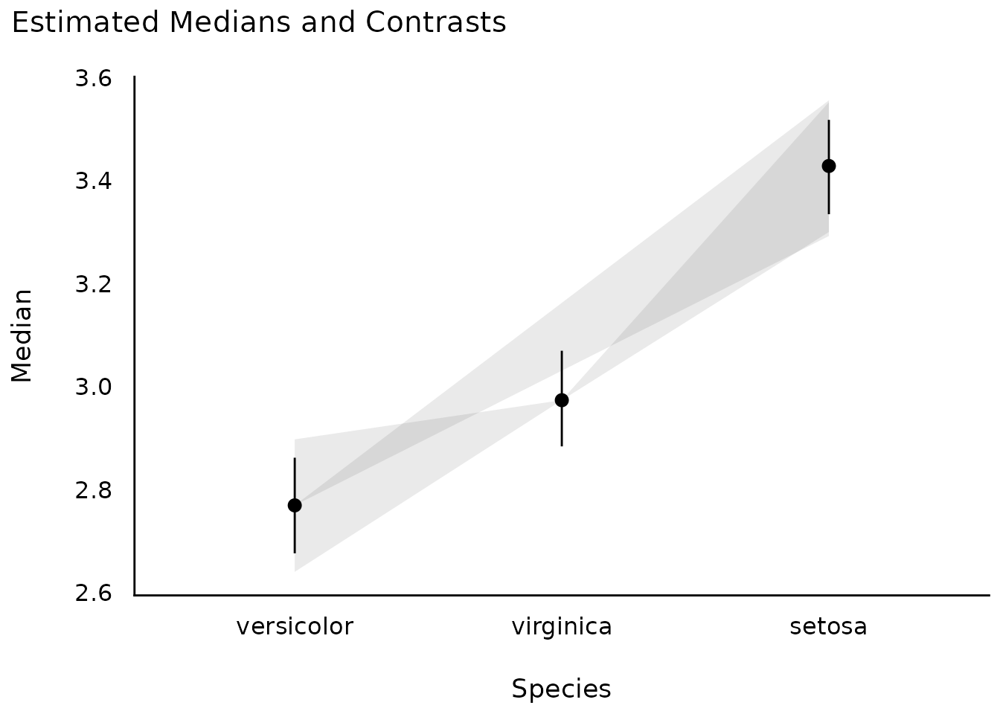
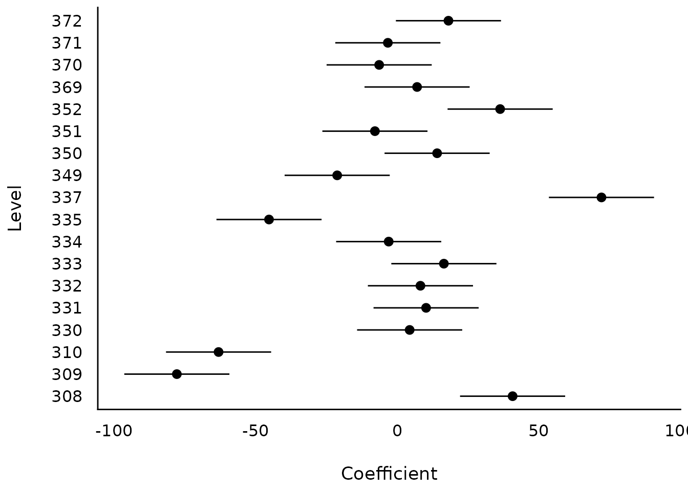

Introduction
modelbased is a package in easystats ecosystem to help with model-based estimations, to easily compute of marginal means, contrast analysis and model predictions.
For more, see: https://easystats.github.io/modelbased/
This vignette can be referred to by citing the package:
citation("see")
#>
#> To cite package 'see' in publications use:
#>
#> Lüdecke et al., (2021). see: An R Package for Visualizing Statistical
#> Models. Journal of Open Source Software, 6(64), 3393.
#> https://doi.org/10.21105/joss.03393
#>
#> A BibTeX entry for LaTeX users is
#>
#> @Article{,
#> title = {{see}: An {R} Package for Visualizing Statistical Models},
#> author = {Daniel Lüdecke and Indrajeet Patil and Mattan S. Ben-Shachar and Brenton M. Wiernik and Philip Waggoner and Dominique Makowski},
#> journal = {Journal of Open Source Software},
#> year = {2021},
#> volume = {6},
#> number = {64},
#> pages = {3393},
#> doi = {10.21105/joss.03393},
#> }Let’s first load all the needed libraries and set a common ggplot theme for all plots:
Pairwise Contrasts
model <- stan_glm(Sepal.Width ~ Species, data = iris, refresh = 0)
contrasts <- estimate_contrasts(model)
means <- estimate_means(model)
plot(contrasts, means)
Estimate model-based predictions for the response
Interactions, with continuous interaction terms
model <- lm(mpg ~ wt * gear, data = mtcars)
result <- estimate_expectation(model, data = "grid")
plot(result)
Interactions, with continuous interaction terms
mtcars$gear <- as.factor(mtcars$gear)
model <- lm(mpg ~ wt * gear, data = mtcars)
result <- estimate_expectation(model, data = "grid")
plot(result)
Interactions between two continuous variables
model <- lm(mpg ~ hp * wt, data = mtcars)
slopes <- estimate_slopes(model, trend = "hp", at = "wt")
plot(slopes)
Group-level scores of mixed models
model <- lmer(Reaction ~ Days + (1 | Subject), data = sleepstudy)
result <- estimate_grouplevel(model)
plot(result)
model <- lmer(Reaction ~ Days + (1 + Days | Subject), data = sleepstudy)
result <- estimate_grouplevel(model)
plot(result)
Estimate slopes
model <- lm(Sepal.Width ~ Species * Petal.Length, data = iris)
result <- estimate_slopes(model, trend = "Petal.Length", at = "Species")
plot(result)
model <- lm(Petal.Length ~ Species * poly(Sepal.Width, 3), data = iris)
result <- estimate_slopes(model, at = c("Sepal.Width", "Species"))
plot(result)Estimate derivatives
Linear-model
model_lm <- lm(mpg ~ wt, data = mtcars)
plot(estimate_relation(model_lm))Non-linear model
# Fit a non-linear General Additive Model (GAM)
model <- mgcv::gam(Sepal.Width ~ s(Petal.Length), data = iris)
# 1. Compute derivatives
deriv <- estimate_slopes(model,
trend = "Petal.Length",
at = "Petal.Length",
length = 100
)
# 2. Visualize predictions and derivative
plots(
plot(estimate_relation(model)),
plot(deriv),
n_rows = 2
)